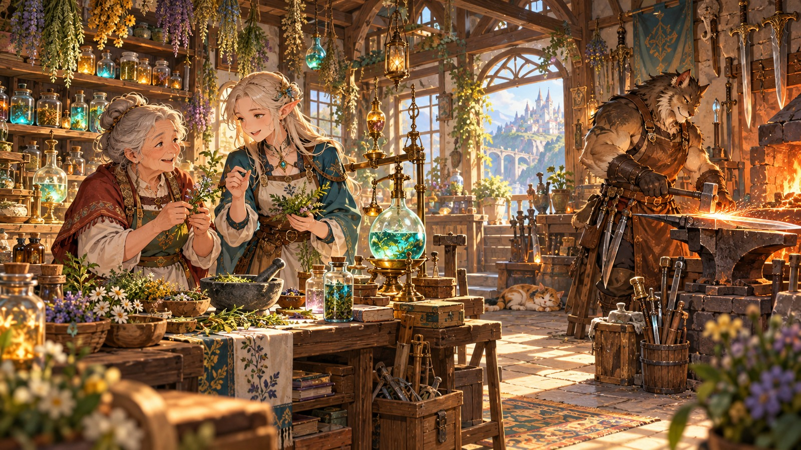

FANTASY WORKSHOP SIMULATION · INTERACTIVE CONCEPT
ニャーの工房
冒険へ出る人にも、街に残る人にも、物語がある。 ※ゲーム画面は演出付きコンセプト・モックアップです
注目＆おすすめ ／ ゲームプレイイメージ

⚒ ニャーの工房
春 12日 / 夕刻
春 12日 / 夕刻
🪙 2,450 G
✦ マナ 78
✦ マナ 78
鍛造工房 ― 炉の火を灯せ
▸ クエスト進行中
冒険者からの依頼：星鉄の剣を完成させよう
⚒ 鍛造ミニ体験：冒険者の剣をつくる
画面内のボタンを押して、工房の仕事を体験してみよう。映像と効果音が反応します。
妖精「僕と一緒に、工房を始めよう！」